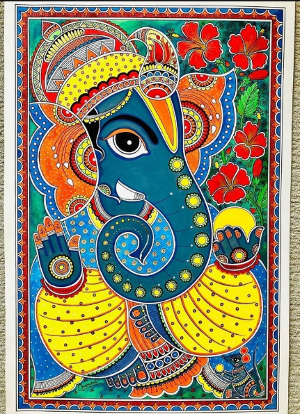

Madhubani painting, also known as Mithila painting, originated in the Mithila region of Bihar, India. It is known for intricate patterns, bright colors, and themes based on mythology, nature, and folklore.
1. Origins (Ancient Period – 7th–8th Century BCE)
I Madhubani art originated in the 'Mithila region' of Bihar and parts of Nepal.
II It is believed to date back to the 'Ramayana era', when King Janaka (father of Sita) asked artists to create paintings for Sita’s wedding to Lord Rama.
III Traditionally, women painted on walls and floors of their homes using natural dyes.
2. Medieval Period (11th–17th Century)
I The art form continued as 'folk traditions', mainly depicting Hindu deities like Krishna, Rama, Durga, and Shiva.
II "Mythological themes"and festivals became central subjects.
III Paintings were done on mud walls and floors using rice paste, turmeric, soot, and natural colors.
3. Colonial Era (18th–19th Century)
I The 'British colonial period' saw little attention to this art form.
II Madhubani art remained a domestic and ritualistic tradition, mostly preserved by rural women.
4. Modern Recognition (1934 Earthquake)
I The '1934 Bihar earthquake' brought Madhubani art into the spotlight when British officer "William Archer" discovered the paintings on the interior walls of damaged homes.
II He documented them, leading to the "first global awareness" of the art form.
5. Post-Independence (1960s–1980s)
I In the 1960s, artists began painting on handmade paper and canvas instead of walls.
II Government and NGOs promoted the art form for economic upliftment.
III Artists like Sita Devi, Baua Devi, and Jagdamba Devi gained recognition.
IV In 1975, 'Jagdamba Devi' received the Padma Shri award.
6. Contemporary Era (1990s–Present)
I Madhubani paintings are now globally recognized and sold as artworks on canvas, fabric, and even digital formats.
II Themes expanded to include social messages (e.g., women’s empowerment, environmental conservation).
III In 2020, Madhubani railway station in Bihar was decorated entirely with Madhubani art, gaining worldwide attention.
I 'Sita Devi' –
1. Known as the pioneer of modern Madhubani paintings.
2.Born in 1914 near Saharsa, Bihar. Died 2005 in Jitwarpur, Madhubani.
3.A pioneer in Madhubani art.
4.She was one of the first painters to move from wall art to paper.
5.Padma Shri in 1981
II 'Baua Devi' –
1. National award-winning artist promoting traditional styles.
2.From Jitwarpur village, Bihar Known for Madhubani / Mithila painting.
3. National Award (1984), Padma Shri (2017)
III 'Mahasundari Devi' –
1.Received Padma Shri for contributions to folk art.
2.Born 15 April 1922 in Chatra village, Madhubani.
3.Died 2013.
4.Expert in Madhubani painting, also worked with other crafts.
5.Received Padma Shri in 2011
1.Materials: Natural dyes and pigments like turmeric, indigo, and soot.
2.Mediums: Handmade paper, canvas, cloth, and even walls.
3.Tools: Twigs, brushes, nib pens, matchsticks.
4.Styles: Bharni, Kachni, Tantrik, Godna, and Kohbar.
5.Themes: Hindu deities (Krishna, Shiva, Durga), nature (sun, moon, animals), and social events (weddings, festivals).
6.Colors: Bright primary colors like red, yellow, blue, green; no shading is used.